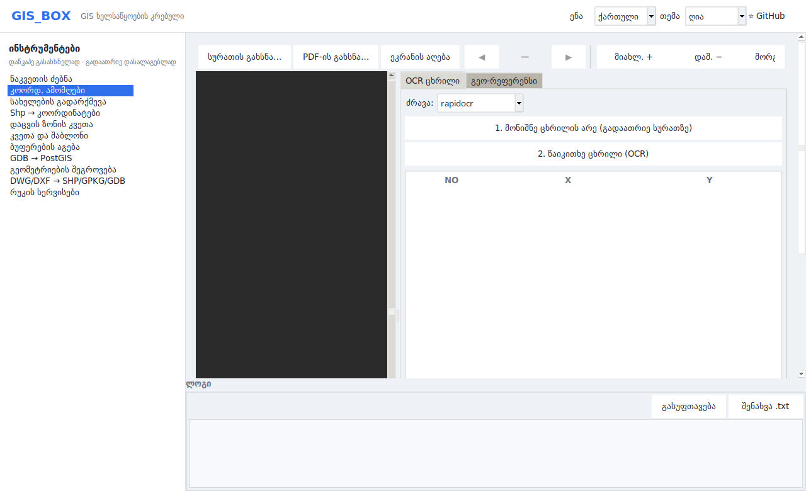
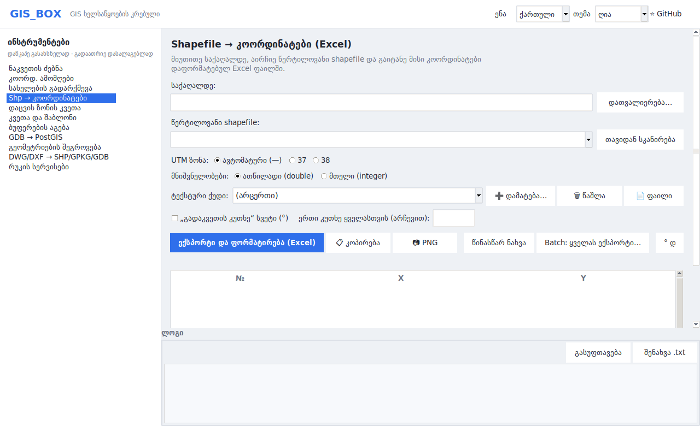
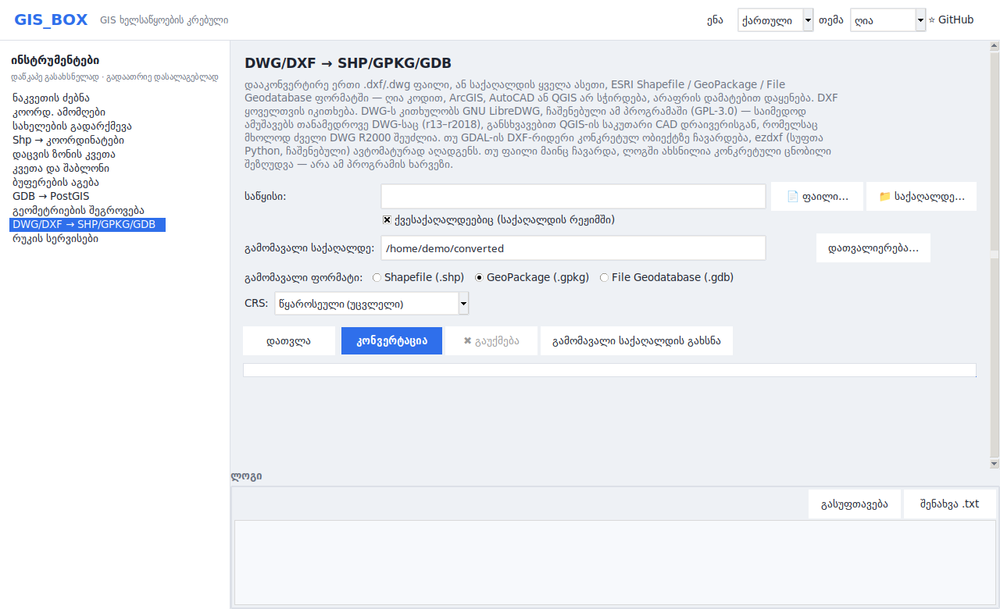
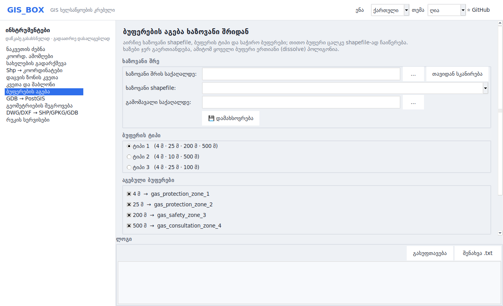
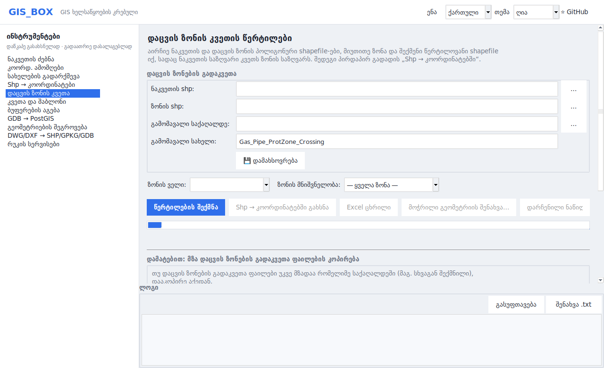
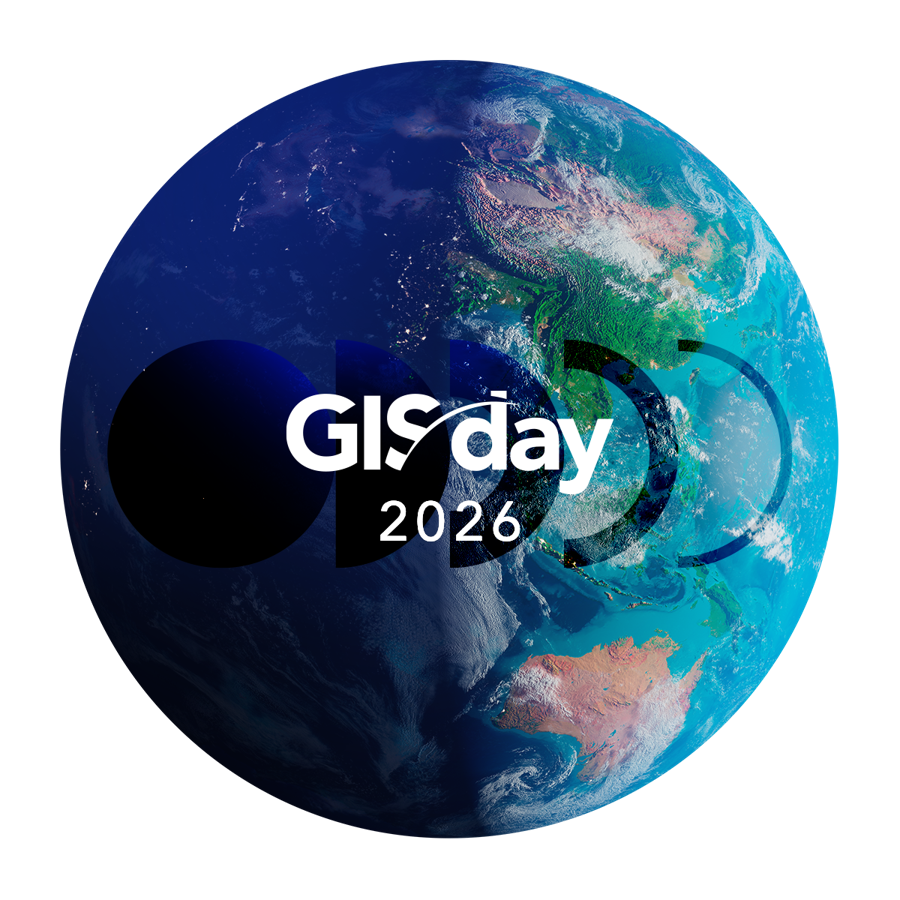

ეს არის GIS_BOX-ის შექმნის ამბავი გეოგრაფებისთვის: რა ამოცანები მქონდა, სად დამეხმარა AI (Claude) და სად დამჭირდა რამდენიმე ცდა. ფაქტები git ისტორიიდანაა (github.com/GIS-GEORGIA/gis-toolkit), გადამოწმებულია 2026-11-18-ზე. ეკრანის სურათები GIS_BOX-ის ნამდვილი ფანჯრებია.This is the story of building GIS_BOX for geographers: the tasks I had, where AI (Claude) helped and where it took several attempts. Facts come from the git history (github.com/GIS-GEORGIA/gis-toolkit), checked 2026-11-18. Screenshots are real GIS_BOX windows.
პროდუქტიProduct
GIS_BOX: ერთი ფანჯარა GIS ამოცანებისთვისGIS_BOX: one window for everyday GIS tasks
Parcel search by code, coordinates to Excel, DWG → Shapefile, buffers and crossings
The interface in Georgian and English
Free, open source (MIT); Windows and Linux
სურათი — GIS_BOX-ის მთავარი ფანჯარა (ნაკვეთის ძებნა). მარცხნივ 11 ხელსაწყოს სიაა.The image is the GIS_BOX main window (Parcel search). The list of 11 tools is on the left.
ხელსაწყოებიTools
ამოცანები, რომლებიც გეოგრაფს ყოველდღე აქვსTasks a geographer faces every day
ნაკვეთის ძებნა კოდითParcel search by code

კოორდინატები რუკის სურათიდანCoordinates from a map image

წერტილები → ExcelPoints → Excel

DWG → ShapefileDWG → Shapefile

დაცვის ზონების ბუფერებიProtection-zone buffers

ნაკვეთი × დაცვის ზონაParcel × protection zone
თითო სურათი — თითო ხელსაწყოს ნამდვილი ფანჯარა. სულ 11 ხელსაწყოა; აქ 6 გვაჩვენებ.Each image is a real window of one tool. There are 11 tools in total; six are shown here.
ციფრებიNumbers
GIS_BOX ციფრებშიGIS_BOX in numbers
11
ხელსაწყო ერთ ფანჯარაშიtools in one window
11
კვირა (2026-08-20 → 2026-11-04)weeks (2026-08-20 → 2026-11-04)
102
ცვლილება (commit)changes (commits)
159
ავტომატური ტესტიautomated tests
ორენოვანი (ქართული / English) · MIT · Windows და LinuxBilingual (Georgian / English) · MIT · Windows and Linux
102 commit, 26 დღე commit-ით, 2026-08-20-დან 2026-11-04-მდე; 159 = „def test_“ ფუნქციები tests/-ში; ≈11.9 ათასი ხაზი Python (vendor-სა და ტესტების გარეშე); technical doc — 715 ხაზი.102 commits, 26 days with commits, 2026-08-20 to 2026-11-04; 159 = "def test_" functions in tests/; ≈11.9k lines of Python (excluding vendor and tests); technical doc — 715 lines.
ქრონოლოგიაTimeline
11 კვირა: ძირითადი ეტაპები11 weeks: key milestones
თარიღიDate
ეტაპიMilestone
2026-08-20
პირველი ვერსია: ნაკვეთის ძებნა კოდითFirst version: parcel search by code
2026-08-31
ავტომატური შემოწმებები და პირველი გამოშვება v0.1.0Automated checks and the first release, v0.1.0
2026-09-01
GDB → PostGISGDB → PostGIS
2026-09-02
ქართული ასოები და ცხრილი ArcGIS Pro-სთვისGeorgian letters and a table for ArcGIS Pro
2026-09-25
Linux და ტექნიკური დოკუმენტაციაLinux and technical documentation
2026-09-30
DWG → ShapefileDWG → Shapefile
2026-10-08
ბუფერები დაცვის ზონებისთვისProtection-zone buffers
2026-11-04
ბოლო განახლებაLatest update
თარიღები commit-ების ისტორიიდანაა.Dates come from the commit history.
მეთოდიMethod
როგორ ვმუშაობდი AI-თანHow I worked with AI
პატარა ნაბიჯები: 102 ცვლილება 26 დღეში
ყოველი ამოცანა რეალურ ფაილზე მოწმდებოდა, მაგ. 5 რეალური DWG
შეცდომები სწრაფად იხურებოდა: 12 ცვლილება გასწორებაა
ავტომატური შემოწმებები ადრევე — 2026-08-31-დან
დოკუმენტაცია კოდთან ერთად
Small steps: 102 changes in 26 days
Every task was checked on real files, e.g. five real DWG files
Mistakes were closed quickly: 12 changes are fixes
Automated checks early — from 2026-08-31
Documentation alongside the code
ეს სლაიდი git ისტორიიდან გამომდინარე დაკვირვებაა (12 commit-ის სათაურში არის fix / bug / crash). დაამატე შენი პირადი გამოცდილება: როგორ აყალიბებდი თხოვნებს.This slide is an observation from the git history (12 commit subjects mention fix / bug / crash). Add your own experience: how you phrased requests.
ამბავი 1Story 1
ქართული ასოები „????“-ად იქცეოდაGeorgian letters turned into “????”
ქართულად აკრეფისას ველებში „????“ ჩნდებოდა; შაბლონების დამატება ქართულად ვერ ხერხდებოდაTyping Georgian produced “????” in the fields; adding templates in Georgian was not possible
როგორ დამეხმარა AIHow AI helped
ერთ დღეში რამდენიმე გზა ვცადეთ; ბოლოს დავამატეთ გარდამქმნელი: ლათინურად აკრეფილი ტექსტი ქართულად გადადისWe tried several ways in one day; finally we added a converter: text typed in Latin becomes Georgian
შედეგიResult
ქართული შაბლონები მუშაობს; იგივე ხერხი მეორე დღეს სხვა ხელსაწყოშიც გამოვიყენეთGeorgian templates work; the same trick was reused the next day in another tool
გაკვეთილი: როცა პირდაპირი გასწორება არ მუშაობს, გვერდის ავლით გადაწყვეტა შედეგს იძლევაLesson: When a direct fix does not work, a workaround can still deliver
git: 2026-09-02
კომიტების თანმიმდევრობა აჩვენებს რამდენიმე იტერაციას ერთ დღეში და საბოლოოდ — გვერდის ავლით გადაწყვეტას.
commits: 2026-09-02: Fix Georgian keyboard input showing as "????" (Tk system encoding) · Add Latin→Georgian converter for the template input · 2026-09-03: doc_search: Latin→Georgian input to bypass Tk keyboard "????" bug
[აქ დაამატე შენი პირადი ისტორია: რა მოსთხოვე AI-ს და რა მოხდა]The commit sequence shows several iterations in one day and finally a workaround.
commits: 2026-09-02: Fix Georgian keyboard input showing as "????" (Tk system encoding) · Add Latin→Georgian converter for the template input · 2026-09-03: doc_search: Latin→Georgian input to bypass Tk keyboard "????" bug
[Add your own story here: what you asked the AI and what happened]
ამბავი 2Story 2
DWG ArcGIS-ისა და AutoCAD-ის გარეშეDWG without ArcGIS or AutoCAD
DWG ფაილები უნდა გადამეყვანა Shapefile-ში ფასიანი პროგრამების გარეშეI had to convert DWG files to Shapefile without paid software
როგორ დამეხმარა AIHow AI helped
ჯერ ერთი ბიბლიოთეკა ვცადეთ და გამოჩნდა, რომ ის მხოლოდ ძველ DWG ვერსიას კითხულობს; შემდეგ ჩავაშენეთ უფასო LibreDWG, სარეზერვოდ — კიდევ ერთი ბიბლიოთეკაWe first tried one library and found it reads only an old DWG version; then we bundled the free LibreDWG, with another library as a fallback
შედეგიResult
commit-ის მიხედვით 5 რეალური DWG ფაილიდან 5 გადაიყვანა; არაფრის დაყენება არ სჭირდებაPer the commit, 5 of 5 real DWG files convert; nothing to install
გაკვეთილი: შეზღუდვა რეალურ ფაილებზე ტესტირებით გამოჩნდა, არა დოკუმენტაციითLesson: The limit showed up by testing on real files, not by reading docs
git: 2026-09-30
ყველა ეს commit ერთი დღისაა (2026-09-30). LibreDWG არის GPL-3.0 და ცალკე ბინარია.
commits: 2026-09-30: dwg_convert: bridge DWG through system GDAL, expose libopencad's real limit · bundle GNU LibreDWG — real, working DWG reading · ezdxf rescue closes the gap -- 5/5 real DWG files now convert
[აქ დაამატე შენი პირადი ისტორია: რა მოსთხოვე AI-ს და რა მოხდა]All these commits are from one day (2026-09-30). LibreDWG is GPL-3.0 and a separate binary.
commits: 2026-09-30: dwg_convert: bridge DWG through system GDAL, expose libopencad's real limit · bundle GNU LibreDWG — real, working DWG reading · ezdxf rescue closes the gap -- 5/5 real DWG files now convert
[Add your own story here: what you asked the AI and what happened]
ამბავი 3Story 3
კოორდინატთა ცხრილი ArcGIS Pro-ს მაკეტშიA coordinate table in an ArcGIS Pro layout
Shp → კოორდინატები: ღილაკი „PNG“Shp → coordinates: the “PNG” button
პრობლემაProblem
კოორდინატთა ცხრილი ArcGIS Pro-ს მაკეტში უნდა ჩამესვა ისე, რომ არ გაწელილიყოI needed to place a coordinate table in an ArcGIS Pro layout without it being stretched
როგორ დამეხმარა AIHow AI helped
ცხრილი გამჭვირვალე სურათად გადავაქციეთ; იმავე დღეს გავასწორეთ პროპორციები, ტექსტის სიმკვეთრე და შავი სურათის შეცდომაWe turned the table into a transparent image; the same day we fixed the proportions, the text sharpness and an all-black image bug
შედეგიResult
ღილაკი „PNG“ ინახავს გამჭვირვალე სურათს მაკეტისთვისThe “PNG” button saves a transparent image for the layout
გაკვეთილი: პატარა ვიზუალური ხარვეზები სწრაფ იტერაციებში იხსნებაLesson: Small visual defects get fixed in quick iterations
git: 2026-09-02
სურათზე ჩანს ღილაკი „PNG“ (ცხრილის გამჭვირვალე სურათად შენახვა).
commits: 2026-09-02: "📷 Image" copy for ArcGIS Pro layout · 📷 saves a transparent PNG (no stretch in ArcGIS Pro) · table_image: crisp text via high scale + 2x supersampling · table_image: fix all-black output — white RGB under transparency
[აქ დაამატე შენი პირადი ისტორია: რა მოსთხოვე AI-ს და რა მოხდა]The screenshot shows the “PNG” button (saves the table as a transparent image).
commits: 2026-09-02: "📷 Image" copy for ArcGIS Pro layout · 📷 saves a transparent PNG (no stretch in ArcGIS Pro) · table_image: crisp text via high scale + 2x supersampling · table_image: fix all-black output — white RGB under transparency
[Add your own story here: what you asked the AI and what happened]
ამბავი 4Story 4
პროგრამა „იყინებოდა“The program “froze”
ნაკვეთის ძებნა: გაუქმება და პროგრესიParcel search: cancel and progress
პრობლემაProblem
GDB-დან შრეების წაკითხვისას პროგრამა „იყინებოდა“; ჩანართი ნელა იხსნებოდაThe program “froze” while reading layers from a GDB; the tab opened slowly
როგორ დამეხმარა AIHow AI helped
დავამატეთ გაუქმება და პროგრესის ზოლი; წაკითხვა ფონზე გადავიტანეთ; მძიმე ბიბლიოთეკები მხოლოდ საჭიროებისას იტვირთებაWe added cancel and a progress bar, moved reading to the background, and load heavy libraries only when needed
შედეგიResult
commit-ის მიხედვით ჩანართი მყისიერად იხსნება და წაკითხვა აღარ აყინებს ფანჯარასPer the commits, the tab opens instantly and reading no longer freezes the window
გაკვეთილი: რეალური გამოყენება აჩვენებს, სად ნელდება პროგრამაLesson: Real use shows where a program is slow
git: 2026-09-01 → 09-18
სამი ეტაპი სამ სხვადასხვა თარიღზე.
commits: 2026-09-01: Parcel search: cancel + progress bar · 2026-09-07: parcel_search: read GDB layers/fields off the UI thread (no more freeze) · 2026-09-18: parcel_search: lazy-load pandas/pyogrio so opening the tab is instant
[აქ დაამატე შენი პირადი ისტორია: რა მოსთხოვე AI-ს და რა მოხდა]Three steps on three different dates.
commits: 2026-09-01: Parcel search: cancel + progress bar · 2026-09-07: parcel_search: read GDB layers/fields off the UI thread (no more freeze) · 2026-09-18: parcel_search: lazy-load pandas/pyogrio so opening the tab is instant
[Add your own story here: what you asked the AI and what happened]
ამბავი 5Story 5
როგორ ვენდო გამოთვლებსHow to trust the calculations
როგორ ვიცი, რომ შედეგები სწორია, როცა კოდს AI-თან ერთად ვწერ?How do I know the results are right when I write code together with AI?
როგორ დამეხმარა AIHow AI helped
გამოთვლების ლოგიკა გამოვაცალკევეთ ფანჯრისგან და დავწერეთ ტესტები; ავტომატურმა შემოწმებამ აჩვენა, რომ ზოგი ტესტი ჩუმად გამოტოვებული იყოWe separated the calculation logic from the window and wrote tests; the automated check revealed that some tests were silently skipped
შედეგიResult
159 ავტომატური ტესტი; შემოწმება Linux-ზე, ფანჯრის გაშვების ტესტითაც159 automated tests; checks run on Linux, including a window-launch test
გაკვეთილი: ტესტები არის უსაფრთხოების ბადე, როცა კოდს AI-თან ერთად წერLesson: Tests are the safety net when you write code with AI
git: 2026-08-31 → 09-30
ჩუმად გამოტოვებული ტესტების პრობლემა 2026-09-30-ის commit-ის სათაურშია.
commits: 2026-08-31: Add test suite and CI test job; extract pure logic modules · 2026-09-01: Extract search logic to tools/search_core (GUI-free, testable) · 2026-09-30: tests: fix dwg_convert pure tests being skipped in CI (no geopandas)
[აქ დაამატე შენი პირადი ისტორია: რა მოსთხოვე AI-ს და რა მოხდა]The silently skipped tests issue is in the subject of the 2026-09-30 commit.
commits: 2026-08-31: Add test suite and CI test job; extract pure logic modules · 2026-09-01: Extract search logic to tools/search_core (GUI-free, testable) · 2026-09-30: tests: fix dwg_convert pure tests being skipped in CI (no geopandas)
[Add your own story here: what you asked the AI and what happened]
ამბავი 6Story 6
კოლეგას Python-ის დაყენება არ სჭირდებაNo Python needed for a colleague
კოლეგას უნდა შეეძლოს პროგრამის გაშვება Python-ის დაყენების გარეშე Windows-ზე და Linux-ზეA colleague should run the program without installing Python, on Windows and Linux
როგორ დამეხმარა AIHow AI helped
მზა ფაილები ავტომატურად აიწყო; პირველი ჩავარდნები იმავე დღეს გამოვასწორეთ; Linux-ის მხარდაჭერა მოგვიანებით დაემატაReady-made files are built automatically; the first failures were fixed the same day; Linux support came later
შედეგიResult
release v0.1.0 (2026-08-31): Windows zip; Linux deb, rpm, AppImage, tar.gzrelease v0.1.0 (2026-08-31): Windows zip; Linux deb, rpm, AppImage, tar.gz
გაკვეთილი: ჩავარდნა სწრაფი უკუკავშირია — ერთი-ორი ცდა და მზადააLesson: A failure is quick feedback — a try or two and it is done
git: 2026-08-31
release-ის აქტივები გადამოწმებულია GitHub-ზე (v0.1.0).
commits: 2026-08-31: Packaging: standalone builds via PyInstaller + release workflow · Release: install nfpm via Go and make Linux packaging non-fatal · Release: fix nfpm deb/rpm content collision (use type: tree) · 2026-09-25: linux: cross-platform support
[აქ დაამატე შენი პირადი ისტორია: რა მოსთხოვე AI-ს და რა მოხდა]Release assets verified on GitHub (v0.1.0).
commits: 2026-08-31: Packaging: standalone builds via PyInstaller + release workflow · Release: install nfpm via Go and make Linux packaging non-fatal · Release: fix nfpm deb/rpm content collision (use type: tree) · 2026-09-25: linux: cross-platform support
[Add your own story here: what you asked the AI and what happened]
ამბავი 7Story 7
ნაკვეთი × დაცვის ზონაParcel × protection zone
დაცვის ზონის კვეთაZone intersection
პრობლემაProblem
ნაკვეთის საზღვარი და დაცვის ზონა: მჭირდებოდა გადაკვეთის წერტილები, ფართობები და საბოლოო Excel შაბლონიParcel boundary and protection zone: I needed crossing points, areas and the final Excel template
როგორ დამეხმარა AIHow AI helped
ლოგიკა ეტაპობრივად: წერტილების სტაბილური დანომვრა, ფართობები (ნაკვეთი / მოჭრილი / დარჩენილი), შაბლონი; რეალურ მონაცემებზე გამოჩენილი შემთხვევები გასწორდაStep by step: stable point numbering, areas (parcel / cut / remainder), the template; edge cases found on real data were fixed
შედეგიResult
გაფრთხილება არაღრმა გადაკვეთაზე; 3D (Z) ხაზების შეცდომა გასწორდაA warning on shallow crossings; the 3D (Z) line error was fixed
გაკვეთილი: რეალურ მონაცემებზე ჩნდება კიდეებზე შემთხვევებიLesson: Real data reveals the edge cases
git: 2026-09-21 → 10-08
დომენური წესები (შაბლონი, ზონები) ჩემია; AI ახორციელებდა იმპლემენტაციას.
commits: 2026-09-21: zone_intersect: order crossing points along the zone corridor (stable numbering) · 2026-10-01: compute parcel/cut/remainder areas · xlsx_format: match the user's finalized areas-block template exactly · 2026-10-08: Fix crash on 3D (Z) lines in crossing-angle check
[აქ დაამატე შენი პირადი ისტორია: რა მოსთხოვე AI-ს და რა მოხდა]The domain rules (template, zones) are mine; AI did the implementation.
commits: 2026-09-21: zone_intersect: order crossing points along the zone corridor (stable numbering) · 2026-10-01: compute parcel/cut/remainder areas · xlsx_format: match the user's finalized areas-block template exactly · 2026-10-08: Fix crash on 3D (Z) lines in crossing-angle check
[Add your own story here: what you asked the AI and what happened]
ადამიანის როლიThe human role
რას წყვეტდა გეოგრაფიWhat the geographer decided
რა ამოცანა მჭირდება: საკადასტრო კოდები, დაცვის ზონები, კოორდინატთა ცხრილები
სად გამოიყენება შედეგი: ArcGIS Pro-ს მაკეტი, Excel-ის საბოლოო შაბლონი
გეოგრაფიული წესები: ბუფერებისთვის მხოლოდ EPSG:32637 / 32638
მიღება რეალური მონაცემებით, მაგ. 5 რეალური DWG ფაილი
Which task I need: cadastral codes, protection zones, coordinate tables
Where the result is used: an ArcGIS Pro layout, the final Excel template
Geographic rules: buffers only in EPSG:32637 / 32638
Acceptance on real data, e.g. five real DWG files

ეს სლაიდი git ისტორიის ფაქტებზეა დაფუძნებული (შაბლონი, EPSG შეზღუდვა, 5/5 DWG). დაამატე შენი სიტყვებით, რას წყვეტდი შენ.This slide rests on facts from the git history (template, EPSG restriction, 5/5 DWG). Add in your own words what you decided.
დასკვნაTakeaways
რა ვისწავლეWhat I learned
პატარა ნაბიჯები და ხშირი შემოწმება მუშაობს
ტესტები ადრევე აუცილებელია
რეალური ფაილები და მონაცემები აჩვენებს ნამდვილ შეზღუდვებს
როცა პირდაპირი გზა არ მუშაობს, ეძებე გვერდის ავლით გადაწყვეტა
Small steps and frequent checks work
Tests are essential early
Real files and data reveal the true limits
When the direct way fails, look for a workaround
დასკვნები ზემოთ მოყვანილი ამბებიდანაა. დაამატე შენი პირადი დასკვნა.The takeaways come from the stories above. Add your own conclusion.
GIS DAY 2026
GIS_BOX: ჩამოტვირთე და სცადეGIS_BOX: download and try
QR კოდი გადაგიყვანთ GitHub რეპოზიტორიაში; Releases გვერდზე მზა ბილდებია Windows-ისა და Linux-ისთვის.The QR code leads to the GitHub repository; the Releases page has prebuilt Windows and Linux builds.